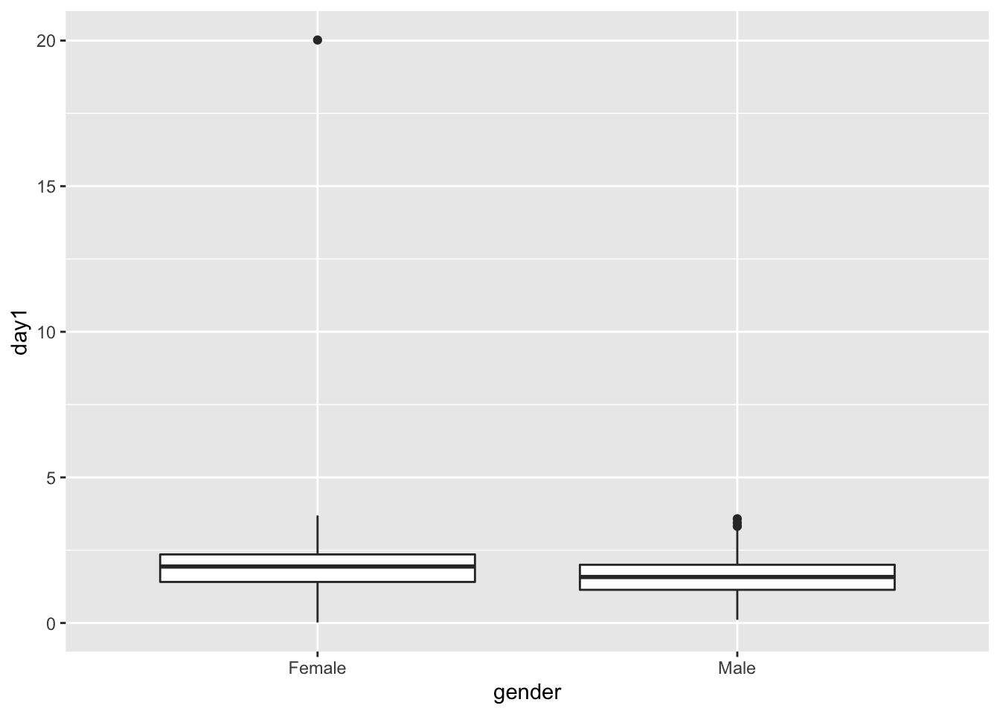

Tema_3_Graficos
Raymond L. Tremblay
el 4 de febrero, 2020
library(ggplot2)
library(Hmisc)## Loading required package: lattice## Loading required package: survival## Loading required package: Formula##
## Attaching package: 'Hmisc'## The following objects are masked from 'package:base':
##
## format.pval, unitsLa información utilizada en este documento proviene en parte del libro Discovering Statistics using R por Andy Field, Jeremy Miles y Zoë Field.
Como crear una gráfica de regresión lineal usando ggplot
- Subir los datos “ExamAnxiety” Los archivos de datos que se usan en el libro se encuentran en este enlace, https://studysites.sagepub.com/dsur/study/articles.htm
see page 136 in book
DATA FILE = Exam Anxiety
library(readr)
Exam_Anxiety <- read_csv("Data_files_csv/Exam Anxiety.csv")## Parsed with column specification:
## cols(
## Code = col_double(),
## Revise = col_double(),
## Exam = col_double(),
## Anxiety = col_double(),
## Gender = col_character()
## )head(Exam_Anxiety, n=1)## # A tibble: 1 x 5
## Code Revise Exam Anxiety Gender
## <dbl> <dbl> <dbl> <dbl> <chr>
## 1 1 4 40 86.3 Maletail(Exam_Anxiety, n=2)## # A tibble: 2 x 5
## Code Revise Exam Anxiety Gender
## <dbl> <dbl> <dbl> <dbl> <chr>
## 1 102 9 40 79.0 Male
## 2 103 20 50 91.1 Femalelibrary(readr)
Anxiety <- read_csv("~/Google Drive/Classes/Biometria/2019_Agosto_Biometria/Anxiety.csv")## Parsed with column specification:
## cols(
## Code = col_double(),
## Revise = col_double(),
## Exam = col_double(),
## Anxiety = col_double(),
## Gender = col_character()
## )examData = Anxiety
Exam_Anxiety = Anxietyhead(Exam_Anxiety) #cuando no pone n=, se ve los primepors 6## # A tibble: 6 x 5
## Code Revise Exam Anxiety Gender
## <dbl> <dbl> <dbl> <dbl> <chr>
## 1 1 4 40 86.3 Male
## 2 2 11 65 88.7 Female
## 3 3 27 80 70.2 Male
## 4 4 53 80 61.3 Male
## 5 5 4 40 89.5 Male
## 6 6 22 70 60.5 Femaletail(Exam_Anxiety, n=3)## # A tibble: 3 x 5
## Code Revise Exam Anxiety Gender
## <dbl> <dbl> <dbl> <dbl> <chr>
## 1 101 1 2 82.3 Male
## 2 102 9 40 79.0 Male
## 3 103 20 50 91.1 FemaleMedida de tendencia central
Calculate the mean
x=c(1,2,3,4,5,6,7,8,9,10, 1100)
d=c(2:100)
mean(x)## [1] 105mean(d)## [1] 51d## [1] 2 3 4 5 6 7 8 9 10 11 12 13 14 15 16 17 18 19 20
## [20] 21 22 23 24 25 26 27 28 29 30 31 32 33 34 35 36 37 38 39
## [39] 40 41 42 43 44 45 46 47 48 49 50 51 52 53 54 55 56 57 58
## [58] 59 60 61 62 63 64 65 66 67 68 69 70 71 72 73 74 75 76 77
## [77] 78 79 80 81 82 83 84 85 86 87 88 89 90 91 92 93 94 95 96
## [96] 97 98 99 100range
range(d)## [1] 2 100median(x)## [1] 6#Interquartile Range
quantile(x)## 0% 25% 50% 75% 100%
## 1.0 3.5 6.0 8.5 1100.0quantile(x, probs = c(0.015, 0.25, 0.50,.75, .975)) #Selecionar los quantiles. ## 1.5% 25% 50% 75% 97.5%
## 1.15 3.50 6.00 8.50 827.50mean(Exam_Anxiety$Revise)## [1] 19.85437range(Exam_Anxiety$Revise)## [1] 0 98y=rnorm(1001)
y## [1] -1.5348707403 -0.0517508812 0.2196417007 0.5076220612 1.6395796701
## [6] 0.5649118933 2.1730124081 -1.3327428792 0.4248290032 0.3534603672
## [11] 0.4893745681 -0.9710460634 -0.1108672259 -1.3883820195 -0.2378759061
## [16] -0.4128006569 0.5316041252 0.1802151366 0.2389113740 2.5653492474
## [21] -1.0500480887 -0.5889137022 0.4489263900 2.2871255363 0.0280801378
## [26] -0.0640957832 0.4822758782 1.4726223625 -0.0743695219 -0.0297688570
## [31] -1.4567296185 -0.7010201202 0.7883442730 -1.5531322457 0.4008092332
## [36] 0.7388234069 -0.5232720609 -0.2188074143 0.9425395937 -0.2951312755
## [41] -0.5590051784 0.0959288869 -0.8013179266 -0.8987098914 -1.0472308115
## [46] 1.0401863749 1.1908125272 -1.7458522245 0.5674167567 -0.0034649084
## [51] 1.2082447988 -0.3013997164 -3.0174141325 -1.2944348129 -0.1453339615
## [56] 0.6393736442 -1.1427258975 -0.1151272520 -0.0860541761 1.8322057816
## [61] -0.7170736240 -0.0496282280 -0.6668985141 -1.1084845261 -1.9939935868
## [66] 0.7368005713 -2.4093760056 -0.2538172850 -0.0257065109 -0.2131855473
## [71] 0.3925776639 -0.8124077350 0.1181057023 1.5889569823 1.3095935869
## [76] 2.1202614936 0.0216752003 -0.5949893700 -1.4925259196 0.4983971195
## [81] 0.1422012333 1.8174181823 1.6554438806 -1.3907037045 -0.1406934270
## [86] -0.4972330101 -0.2829882694 -0.0994344807 0.8199724502 -0.2520589518
## [91] 0.2187722845 0.7215001037 0.0156102776 -0.0847867545 -1.0303373314
## [96] 0.1207193171 -0.2219078093 -1.5478922803 -1.1126010459 -1.1266398233
## [101] -0.9229533688 0.3101381557 -1.0772707594 -0.0359216705 -0.2744038098
## [106] 0.5218700925 -0.0550997675 1.2567150782 -0.1063358059 1.4571287593
## [111] 0.6990833562 0.9201119165 0.5567957589 -0.6335251486 1.2787341889
## [116] -1.3185560003 0.9978566253 0.6824895678 -0.8225236969 0.2236626587
## [121] -0.2113419079 -0.2916668027 0.6841283204 -0.8911166046 -1.5464037851
## [126] -0.3257593490 -0.3640083280 -0.4766190304 -2.4631730850 0.7881979434
## [131] 0.5994230086 0.0909393590 0.6457859334 -2.2700395864 -1.1223605951
## [136] -0.0465325349 -0.1882010815 -0.4549490481 -0.2855803889 -0.3420906818
## [141] -1.3156147782 0.1260018878 -0.6960834318 -1.1457198523 -0.1684592011
## [146] -0.5418260884 -0.4478642129 0.3185690440 -0.9320722807 -0.9376992274
## [151] -0.1170404509 -1.8065902713 -1.7607168507 0.0462381739 -2.0833538687
## [156] -0.1785667484 -0.6249793423 -0.6323599480 0.2037333206 -0.0284745369
## [161] -0.7491496521 0.3588007454 -0.2294962288 -0.2811523362 0.5902210025
## [166] -0.3330519344 0.9856870883 -1.2783910791 0.3403450620 0.4467584970
## [171] -1.4216902925 -1.4202666674 0.2344697971 0.3378878413 1.3186641929
## [176] 0.7207093710 -1.2570672806 -1.7506122584 -0.4098873633 0.6959820334
## [181] -1.3044242792 -1.1347677232 0.6092521157 -1.1275470671 -0.4441680223
## [186] -1.1185174091 0.3253234937 1.4810610276 -0.4394344084 0.3184841521
## [191] 0.6532435363 -0.3110613269 0.4601069502 -1.5435069120 -0.5194779792
## [196] 0.7901087910 0.3893603844 2.7219095826 0.7538834118 -0.0643802586
## [201] 0.4514214385 -1.0305171968 1.0590868723 -0.5548024639 -0.1818394355
## [206] -0.5237846390 -0.7987825905 -1.4021174259 -0.1585341747 1.4618011732
## [211] 1.8761190120 0.2898159703 -0.3756498357 -0.4965964845 0.1913295808
## [216] 2.5589501569 0.5499222684 -1.1488131801 0.1961671102 -1.2625908719
## [221] 0.3352647982 -1.0030088161 -0.8640605301 -0.1220966514 0.6456850138
## [226] -0.4229202410 0.4357362391 2.3406674886 1.0590947723 -0.3605481699
## [231] 0.5892376562 1.1047219893 -0.3673059083 0.0606701567 0.2321720728
## [236] -1.1402039443 -0.6084462196 -1.7337207376 1.2992676592 0.5412856531
## [241] 1.0052796475 1.8739609860 -0.5490935684 -1.4283210657 -1.5695534896
## [246] 0.8498905619 1.3752622401 -0.7083813374 1.3909684863 0.8430439758
## [251] 0.3578352942 -0.1454796637 1.0090118654 -0.1915318393 -0.5277917852
## [256] 0.6894991931 0.0788071482 0.6370193869 0.9453947501 -1.2284456128
## [261] -0.9463726032 -1.2323968395 0.6371819325 0.9463632701 -1.4244418011
## [266] 0.1947365148 1.6476331129 -0.4127446127 -1.9733743942 -2.3098606494
## [271] -0.0355067977 -0.1134391791 0.5562919674 -2.0536370893 0.4317535958
## [276] 0.3591643083 0.8413182009 0.3959300192 0.1752204236 -0.7296105509
## [281] -0.8233764304 -0.2601923856 -0.5509813422 0.1707135047 0.2463836229
## [286] -0.7256081704 1.1007213655 0.6433794001 -0.4091435414 0.1082986826
## [291] -0.3109955142 -1.8350403056 0.6723931449 0.0995029867 -0.8232775561
## [296] -0.3573481557 -0.2713055130 -1.0219117887 -0.1736428140 -0.9674937195
## [301] -1.6789455203 -0.3875963420 1.1490372039 0.6251009285 -0.1794861356
## [306] 0.0928490497 -1.1243972503 0.3926529560 -1.6218346895 -0.2929536566
## [311] -1.2044310660 -0.7083421793 -0.9239119557 -0.5408714502 1.2303058758
## [316] 0.6373877363 -0.8905889898 -0.3960094778 -1.1386863812 1.6460189601
## [321] -1.5681649324 1.7999120504 1.1565663456 0.5468778528 -1.9005186699
## [326] -0.2970939674 0.4634958140 -0.1031717206 -0.1456989978 1.5048610690
## [331] 0.4701582182 -0.4707472666 0.2339086736 -1.7564455011 0.5921672215
## [336] -2.4989968911 -0.1702926121 -0.4117132826 0.9429768568 1.1017043723
## [341] -0.9523169806 -0.0585894655 -1.2225130909 0.4523901734 0.6873012319
## [346] -0.7738996341 -2.3390003649 -0.4388317645 -0.2789704629 1.5807947566
## [351] -0.0551021768 0.5578400802 -0.9483950376 -1.4917087361 1.1108678060
## [356] 0.2775977061 1.0450882060 -1.3935174761 0.1655526116 1.6291089403
## [361] 0.5713944350 0.8830048085 -0.4264048726 -0.2282597317 0.5028450660
## [366] -2.5003141144 0.0624336087 1.4715640682 1.0016077266 -0.2341462498
## [371] 0.2324949687 0.4443033265 0.8583310116 2.3902287042 0.0530749915
## [376] 1.0116686627 1.1284912597 -0.4209415542 -0.8033780599 -0.0788705009
## [381] 0.0554713737 -1.1000458603 -0.8603499632 0.2566500009 0.5671844609
## [386] 0.4956268208 0.7432911816 0.5105294429 2.1360866864 -0.3456556209
## [391] 1.3867459282 1.2285086771 0.5416605550 -0.6813799415 -0.5006918999
## [396] 0.2571978505 -0.5687056840 -1.3062506998 0.3521399466 -0.6587853655
## [401] -0.9458615593 0.2702395384 -0.1670105955 1.4806159723 0.2006544350
## [406] -1.5729379229 -0.7434725439 -0.3932060443 -0.2098621849 0.3963169384
## [411] -0.5612272250 1.0895679690 -1.0351000550 0.6709608050 0.7575050566
## [416] 0.9686641878 0.5366996318 -0.4347166203 1.8766563630 0.3741925611
## [421] -0.5921195590 0.5157221024 0.5321506287 -1.1403410012 1.4455874027
## [426] -1.2709453202 -1.0384393189 -0.3540588649 0.1288134194 -1.0266939445
## [431] -1.3178433280 -0.1188300090 -0.1452265047 -0.1513475585 0.7201313427
## [436] 1.4838475790 0.6227268722 1.9309163656 0.0632836155 1.1911237162
## [441] -1.5882243886 0.2875351805 -0.0376400945 -2.7308262811 0.9740079630
## [446] -1.1300594684 0.3567337371 0.6622328258 -0.6616830436 -0.4442412546
## [451] -0.1196533485 -0.6033606674 0.5412733542 0.5203653677 -0.1987556504
## [456] 0.2912964769 0.1135548174 0.3361186722 0.0544584395 1.8882167988
## [461] 0.1044362062 0.8911279623 0.7797205774 -0.2793222741 1.1697567277
## [466] 0.9313429836 0.4171828433 -0.3470576085 0.1377139308 1.0647813513
## [471] -0.9502183308 -1.5748472694 1.0590545590 0.2492015415 -2.1341073663
## [476] -2.8613645275 -0.0150204774 1.2412611401 0.4504131829 0.7170835170
## [481] 1.6831606155 0.7974503695 -2.5541652050 -1.9451805005 1.4752306695
## [486] 0.1946780905 0.0041654336 0.5256768440 2.5382219608 1.3964949710
## [491] 1.3483091170 0.6656911472 -2.3371382023 0.2171354640 -0.5362403631
## [496] 1.0693840816 0.7104443918 -0.8224090128 -0.3682750123 -0.6044250308
## [501] 1.6082266320 -0.1474283354 -0.2292502557 -0.2955466360 -0.1644764834
## [506] 0.5585452538 0.2246325848 -0.6788611488 0.0529318582 0.0519763752
## [511] 0.0829482493 0.5108613828 1.6152927625 0.1994135076 -0.6889779322
## [516] -0.9121257218 2.0480007327 0.5883482740 1.1449799730 -0.4050609710
## [521] -0.3995554045 -0.5583057094 0.6914849744 -1.4584813848 -1.1535083001
## [526] -1.4583986099 1.5639602920 0.0735155537 0.5919439323 -2.3270841310
## [531] 0.4746499884 -1.5584996187 -0.6366809039 -0.3841714661 -0.4086437463
## [536] -1.4960600012 1.0185218641 -0.5751115941 1.0630873096 2.5097623916
## [541] -0.8012049993 2.6357852997 -0.1861552424 0.5675849413 -0.7418424689
## [546] -0.6576744611 0.6073691275 0.7275388757 0.3752600748 -0.3805696711
## [551] -0.6613259118 -0.6239705052 -1.5806643513 0.8006728978 0.0868717540
## [556] -0.8196288819 1.2021763244 -0.1517256323 1.3841227347 1.0483403290
## [561] 0.1963930810 -0.1425996571 -0.2811470633 0.3525230447 -0.9533740387
## [566] 2.0124679565 -0.5663350366 -2.1082277847 0.8592515282 1.2718890281
## [571] 0.8975927672 1.0761812742 -1.7749935787 -0.6175663701 1.1142889256
## [576] -0.7105342453 1.2016746808 1.7932111259 -0.6801202058 -1.1327407533
## [581] 1.4781476605 0.3581724521 -0.7080417663 0.1233656503 1.7550656780
## [586] 0.0091933661 -1.5089253983 1.3419023593 2.4463400081 -1.5211951258
## [591] 0.2892195354 -0.5151813779 0.0650707570 0.4348041842 -1.4200922554
## [596] 0.8142787662 -0.6134863747 0.1977068184 -0.1192186386 -0.7496067517
## [601] 1.1973288342 1.0699945135 -0.1300328091 -0.6926471045 -0.2275052043
## [606] 0.2066971470 0.5901661908 -1.0548844951 2.7915259608 -1.0010537935
## [611] -0.4753690885 0.3690541624 1.9895753547 1.3773579423 1.0966909216
## [616] 1.7842441931 -0.8121447582 -0.9497145708 0.3872954918 -0.4060727699
## [621] 0.4992385177 -0.0368911271 -1.2707382389 -1.4860275248 -0.6968114040
## [626] 0.3339185321 0.2743899491 0.3371007434 0.3228879746 0.6468513523
## [631] 1.5383726701 -0.2760644393 -0.4076440219 0.2519484661 -1.4215261512
## [636] -0.2604211308 -0.9011103569 0.3957164986 0.2563839357 -0.1087976284
## [641] 0.2902320932 0.5692512669 1.3796645652 -0.5968521387 -0.0048745175
## [646] 0.4295469042 -0.1703095082 0.7960035938 -1.6166437698 0.4810342421
## [651] -1.1371639269 -0.7776459817 0.7481087079 -0.6920752748 -0.0619868977
## [656] -0.6273987114 -1.7602265150 -0.0213395676 -1.2900490228 1.3787951525
## [661] -2.2470771299 0.3080529535 -1.4325255434 -0.3746177993 0.2488807214
## [666] 0.4949225657 0.0715941598 1.0013723211 0.0690881254 0.5004806249
## [671] 0.2949662513 -0.1681257058 0.0073947467 -1.9019101447 0.3586329934
## [676] 2.0426265653 -1.4114300706 -1.7554427402 -1.2921628375 0.5340224906
## [681] 1.2332126038 0.2182946769 0.1302688461 -0.5080708613 -0.3989274206
## [686] 1.4477711243 -0.3913193759 1.6604482764 1.8884198479 0.8147124523
## [691] 0.0028515277 1.3275160885 1.5331956682 1.5548460736 0.4790738394
## [696] -0.9371562188 -1.0556627695 -0.6063298602 1.7237075094 -0.7630006918
## [701] -0.0544671803 -0.7228261268 0.6131085811 -0.6272107145 0.9292058353
## [706] 0.3702666515 -0.0396908915 0.7433126175 -1.0156678099 -0.2660933090
## [711] -1.0576894959 1.4996790185 0.0973961256 0.2989671084 -0.6429283294
## [716] -0.1396845905 1.6560195922 0.4827642120 -0.2628840452 -1.6289584339
## [721] -1.4941250561 0.1232467317 -1.0902700429 -1.9565691200 -0.1465731451
## [726] 2.2394632918 -0.1899223353 -0.4383463181 0.0795821701 -0.5269826739
## [731] 2.9366729153 1.1902654479 0.3852041113 -0.2046861024 0.2956485214
## [736] 1.7477329855 1.3020606384 -1.5202016849 -1.6007389177 -0.5538485332
## [741] -0.3417584232 -1.0439751687 1.8133776473 0.1875977117 -1.1154490333
## [746] -0.2001730683 -0.1589360930 -0.0242825030 -0.0860815281 -0.8979062904
## [751] 1.5510968070 0.7538096682 0.5980305315 -0.2716881770 -0.5783306467
## [756] -1.1641676744 -1.0514149462 -0.9793586472 -0.8449015750 -0.1573093777
## [761] 1.2252352364 0.2504261052 1.1517925430 -0.1905847511 -0.4786035820
## [766] 0.9496087948 -0.4304865272 1.0827853730 1.0962105216 2.1018866864
## [771] -1.1861511610 0.8234751540 -2.7749252826 0.4114482393 1.2479645988
## [776] 1.1247438791 -0.7596350596 0.0859648550 -0.0253783785 0.8579667111
## [781] -1.0275317231 -1.1452468426 1.6958918693 0.6729843190 -1.7136439832
## [786] -0.3902589518 -0.5030734055 -0.2922683653 -0.8694321561 0.1660623461
## [791] 1.8588015686 0.2041422945 0.5528834459 0.7752163304 -0.7114892770
## [796] 0.8360700033 -0.1311246991 -1.4210573528 -0.3850048144 -0.3143469172
## [801] -0.1902930374 -0.2791998380 0.9185047221 0.6722149283 1.4188357341
## [806] -0.5973491845 0.2983299710 0.7321121170 0.4946500718 0.1270721279
## [811] 1.8072963157 -0.6099832775 0.4470853049 0.4021352048 1.6436172055
## [816] 0.6470270979 -1.3783582913 -1.2107983130 -0.1334524441 0.2278990182
## [821] -0.6682554210 0.7653387439 0.5943869929 -1.4909490949 -0.3506723479
## [826] 0.8480907227 0.4728494433 1.0130373452 -0.5425782453 0.9539124130
## [831] 1.2400225474 -1.3544077176 0.8027105750 1.4465745332 -0.8097358771
## [836] -0.9986785914 -1.5568656116 -0.1132971548 -0.4666604389 -0.6648419476
## [841] 0.2040217629 1.6875304778 -0.2948792829 0.1773968471 -0.5324423789
## [846] 0.3747809375 -0.6866245090 0.2596198869 -0.7137501865 1.8649309528
## [851] 0.6541353797 -1.1942378544 -0.9142299963 0.8547334262 0.7009178192
## [856] 1.5937916464 1.5475702990 0.3183156113 2.1820056189 0.8880650138
## [861] 0.6559554458 -0.8745000667 0.1445848050 0.2116462008 0.2016143662
## [866] 0.3884374457 1.4832429064 0.6630406171 -0.0917335223 0.2447166003
## [871] -0.9209135453 -2.2171437124 -0.9516410905 -0.0291162547 0.6160771060
## [876] -0.9559360652 0.1470143807 -1.0206158454 -1.2839834654 -0.7433480523
## [881] 0.9461192869 0.2367171880 1.3813036072 0.2445767548 -0.2662220778
## [886] -0.6236864041 0.1204011058 -2.3506877568 1.3622392305 0.5946518373
## [891] -1.0368092660 -0.0169831264 0.5682135089 -1.3761772407 -0.3851437124
## [896] -1.2610309021 0.7856861056 -1.0696450809 -0.9129545310 1.3966496022
## [901] 0.2033482551 0.3640296588 0.1450716737 1.9201324012 0.5721022926
## [906] -1.4183784124 -0.4045747063 -0.8478619284 0.7187121695 1.5911030267
## [911] -0.1249880897 -0.0091233931 0.5337508251 0.8929025344 -0.6102215972
## [916] -0.4878378830 0.2647845408 0.2691865768 0.4008208741 0.5584685754
## [921] -0.1680985748 -0.2215512850 0.6617009823 0.5752669830 0.8371481156
## [926] -0.1519346121 -0.0150862159 2.1666979609 -0.5543522029 0.4612318554
## [931] -1.6140534536 -0.3913908866 -1.9660768509 0.5339414102 0.1385233273
## [936] 0.4238870812 0.7540615676 -0.5614354035 1.8578991967 0.8080762034
## [941] -0.3798819635 0.0614406351 0.3679546925 0.0908155409 -0.8102939218
## [946] 0.0728196937 1.5033817096 -0.2480469052 0.4757863654 -0.4672177997
## [951] -0.0087229261 0.0287345270 -1.8442474610 0.2292653258 -0.8075312051
## [956] -0.7061824963 1.0325171899 -0.8067034280 0.8815157747 1.1666109829
## [961] 0.7040863250 -0.5657640851 -1.3892832616 -1.6090897146 0.2150931823
## [966] 1.4178467781 -0.9067156128 0.7818222568 2.4097170028 0.5372993373
## [971] 0.7412522956 0.0009757505 -0.0983955799 -0.7766916113 0.2176388928
## [976] -0.8668551836 -1.1550451599 -0.0262250548 0.8200754094 -0.5508239155
## [981] -1.4357631348 -0.0690631722 0.2835571343 0.1036023277 0.0974478941
## [986] 0.5009740472 1.6414437204 0.3288515773 0.0847888400 -0.1380399392
## [991] 0.4976140173 -0.5990939742 0.7691930885 0.1319071730 1.4945108022
## [996] -0.9138407594 -0.5614884642 -1.5264998325 1.2522516507 0.6015353566
## [1001] 0.5129995331quantile(y)## 0% 25% 50% 75% 100%
## -3.0174141 -0.6366809 0.0216752 0.6456850 2.9366729probs = c(0.01, 0.10, 0.50,.90)How to do a simple linear point graph and add text to graph, change the axis name
library(ggplot2)
#names(Exam_Anxiety) # para seber el nombre de las columnas
ggplot(Exam_Anxiety, aes(y=Exam, x=Anxiety))+
geom_line(colour="#308A8C")
tail(iris)## Sepal.Length Sepal.Width Petal.Length Petal.Width Species
## 145 6.7 3.3 5.7 2.5 virginica
## 146 6.7 3.0 5.2 2.3 virginica
## 147 6.3 2.5 5.0 1.9 virginica
## 148 6.5 3.0 5.2 2.0 virginica
## 149 6.2 3.4 5.4 2.3 virginica
## 150 5.9 3.0 5.1 1.8 virginicaggplot(iris, aes(Sepal.Length, Petal.Length)) +
geom_point(aes(col = Species)) +
geom_smooth(method="lm", colour="aquamarine") + # lm is for linear model
labs(x = "El largo del Sepalo", y = "El largo del Petalo")+
ggtitle("Basic geom_point and linear regression")## `geom_smooth()` using formula 'y ~ x'
# How to add a title, "ggtitle"
# How to save a Graph
ggsave("Iris_size.png") # .jpeg/.jpg/.tiff## Saving 7 x 5 in image
## `geom_smooth()` using formula 'y ~ x'#Simple scatter with regression line
scatter <- ggplot(examData, aes(Anxiety, Exam))
scatter + geom_point(shape=20, colour="red") +
geom_smooth(method = "lm", colour = "blue", se = F) + # se = F, remueve el intervalo de confianza
labs(x = "Exam Anxiety", y = "Exam Performance %")## `geom_smooth()` using formula 'y ~ x'
#Simple scatter with regression line + CI
scatter <- ggplot(examData, aes(Anxiety, Exam))
scatter + geom_point() +
geom_smooth(method = "lm", colour = "Red")+
labs(x = "Exam Anxiety", y = "Exam Performance %") ## `geom_smooth()` using formula 'y ~ x'
#Regresión lineal más el intervalo de confianza.
scatter <- ggplot(examData, aes(Anxiety, Exam))
scatter + geom_point() +
geom_smooth(method = "lm", colour = "Red", alpha = 0.2, fill = "orange") +
labs(x = "Exam Anxiety", y = "Exam Performance %") ## `geom_smooth()` using formula 'y ~ x'
#Regresión lineal más el intervalo de confianza, usar “colour” por multiples grupos.
names(Exam_Anxiety)## [1] "Code" "Revise" "Exam" "Anxiety" "Gender"ggplot(Exam_Anxiety, aes(y=Exam, x=Anxiety, colour=Gender))+
geom_point(colour="coral")+
geom_smooth(method="lm") + # lm is for linear model
labs(x = "Exam Anxiety Score", y = "Exam Performance %")+
ggtitle("Basic geom_point and linear regression")## `geom_smooth()` using formula 'y ~ x'
Constructing histograms
Data needed are from festivalData
A biologist was worried about the potential health effects of music festivals. So, one year she went to the Download Festival in UK (Download Festival UK). She measured the higiene of 810 concert goes over the 3 day festival. Each day she attempted find all the individuals she census on the first day. + 0 = you smell like a corpse, that is left to rot + 4 = you smell of sweet roses on fresh spring day
The hypothesis is that the personal hygiene of the concert goers would go down dramatically over the 3 days of the festival.
library(readr)
DownloadFestival <- read_csv("Data_files_csv/DownloadFestival.csv")## Parsed with column specification:
## cols(
## ticknumb = col_double(),
## gender = col_character(),
## day1 = col_double(),
## day2 = col_double(),
## day3 = col_double()
## )FD=DownloadFestival
head(FD) # ver las 6 primeras filas## # A tibble: 6 x 5
## ticknumb gender day1 day2 day3
## <dbl> <chr> <dbl> <dbl> <dbl>
## 1 2111 Male 2.64 1.35 1.61
## 2 2229 Female 0.97 1.41 0.290
## 3 2338 Male 0.84 NA NA
## 4 2384 Female 3.03 NA NA
## 5 2401 Female 0.88 0.08 NA
## 6 2405 Male 0.85 NA NAlength(FD$ticknumb) # cuantas filas## [1] 810Constructing histograms and detecting outliers
head(FD, n=2)## # A tibble: 2 x 5
## ticknumb gender day1 day2 day3
## <dbl> <chr> <dbl> <dbl> <dbl>
## 1 2111 Male 2.64 1.35 1.61
## 2 2229 Female 0.97 1.41 0.290tail(FD)## # A tibble: 6 x 5
## ticknumb gender day1 day2 day3
## <dbl> <chr> <dbl> <dbl> <dbl>
## 1 4749 Female 0.52 NA NA
## 2 4756 Female 2.91 0.94 NA
## 3 4758 Female 2.61 1.44 NA
## 4 4759 Female 1.47 NA NA
## 5 4760 Male 1.28 NA NA
## 6 4765 Female 1.26 NA NAhead(FD)## # A tibble: 6 x 5
## ticknumb gender day1 day2 day3
## <dbl> <chr> <dbl> <dbl> <dbl>
## 1 2111 Male 2.64 1.35 1.61
## 2 2229 Female 0.97 1.41 0.290
## 3 2338 Male 0.84 NA NA
## 4 2384 Female 3.03 NA NA
## 5 2401 Female 0.88 0.08 NA
## 6 2405 Male 0.85 NA NA ggplot(FD, aes(day1))+
geom_histogram(colour="white", fill="steelblue") +
labs(x = "Hygiene (Day 1 of Festival)", y = "Frequency")## `stat_bin()` using `bins = 30`. Pick better value with `binwidth`.
summary(DownloadFestival)## ticknumb gender day1 day2
## Min. :2111 Length:810 Min. : 0.020 Min. :0.0000
## 1st Qu.:3096 Class :character 1st Qu.: 1.312 1st Qu.:0.4100
## Median :3620 Mode :character Median : 1.790 Median :0.7900
## Mean :3616 Mean : 1.793 Mean :0.9609
## 3rd Qu.:4155 3rd Qu.: 2.230 3rd Qu.:1.3500
## Max. :4765 Max. :20.020 Max. :3.4400
## NA's :546
## day3
## Min. :0.0200
## 1st Qu.:0.4400
## Median :0.7600
## Mean :0.9765
## 3rd Qu.:1.5250
## Max. :3.4100
## NA's :687#binwidth = 0.6, fill="orange", colour="white"Subsetting data = removing values larger than x
Festivalday1=subset(DownloadFestival, day1<5)
summary(Festivalday1)## ticknumb gender day1 day2
## Min. :2111 Length:809 Min. :0.020 Min. :0.0000
## 1st Qu.:3096 Class :character 1st Qu.:1.310 1st Qu.:0.4100
## Median :3620 Mode :character Median :1.790 Median :0.7900
## Mean :3616 Mean :1.771 Mean :0.9553
## 3rd Qu.:4154 3rd Qu.:2.230 3rd Qu.:1.3350
## Max. :4765 Max. :3.690 Max. :3.4400
## NA's :546
## day3
## Min. :0.0200
## 1st Qu.:0.4400
## Median :0.7600
## Mean :0.9765
## 3rd Qu.:1.5250
## Max. :3.4100
## NA's :686festivalHistogram <- ggplot(Festivalday1, aes(day1))
festivalHistogram +
geom_histogram(fill="orange", colour="white") +
labs(x = "Hygiene (Day 1 of Festival)", y = "Frequency")## `stat_bin()` using `bins = 30`. Pick better value with `binwidth`.
How to create boxplots
festivalBoxplot <- ggplot(Festivalday1, aes(x=1,y=day1))
festivalBoxplot + geom_boxplot() + labs(x = "Gender", y = "Hygiene (Day 1 of Festival)")
Boxplot by Gender
names(Festivalday1)## [1] "ticknumb" "gender" "day1" "day2" "day3"festivalBoxplot <- ggplot(Festivalday1, aes(x=gender,y=day2, colour=gender))
festivalBoxplot +
geom_point()+
geom_boxplot(fill="yellow", alpha=0.1) +
labs(x = "Gender", y = "Hygiene (Day 2 of Festival)")## Warning: Removed 546 rows containing non-finite values (stat_boxplot).## Warning: Removed 546 rows containing missing values (geom_point).
How to detect outliers. Determine the % of data which are outliers (IN Spanish, sesgado) NOTE: that I’m constructing a function, which does not exist
#--------OUTLIERS----------
outlierSummary<-function(variable, digits = 2){
zvariable<-(variable-mean(variable, na.rm = TRUE))/sd(variable, na.rm = TRUE)
outlier95<-abs(zvariable) >= 1.96 # error de 95%
outlier99<-abs(zvariable) >= 2.58 # error de 99%
outlier999<-abs(zvariable) >= 3.29 # error de 99.9%
ncases<-length(na.omit(zvariable))
percent95<-round(100*length(subset(outlier95, outlier95 == TRUE))/ncases, digits)
percent99<-round(100*length(subset(outlier99, outlier99 == TRUE))/ncases, digits)
percent999<-round(100*length(subset(outlier999, outlier999 == TRUE))/ncases, digits)
cat("Absolute z-score greater than 1.96 = ", percent95, "%", "\n")
cat("Absolute z-score greater than 2.58 = ", percent99, "%", "\n")
cat("Absolute z-score greater than 3.29 = ", percent999, "%", "\n")
}
outlierSummary(FD$day3)## Absolute z-score greater than 1.96 = 4.07 %
## Absolute z-score greater than 2.58 = 2.44 %
## Absolute z-score greater than 3.29 = 0.81 %How to do a BOXPLOT of the distribution of the data, no assuming normal distribution.
In this figure we show the median and the percentiles and the outliers
library(ggplot2)
ggplot(FD, aes(gender, day1))+ geom_boxplot()
Now to remove outliers
Festivalday1## # A tibble: 809 x 5
## ticknumb gender day1 day2 day3
## <dbl> <chr> <dbl> <dbl> <dbl>
## 1 2111 Male 2.64 1.35 1.61
## 2 2229 Female 0.97 1.41 0.290
## 3 2338 Male 0.84 NA NA
## 4 2384 Female 3.03 NA NA
## 5 2401 Female 0.88 0.08 NA
## 6 2405 Male 0.85 NA NA
## 7 2467 Female 1.56 NA NA
## 8 2478 Female 3.02 NA NA
## 9 2490 Male 2.29 NA NA
## 10 2504 Female 1.11 0.44 0.55
## # … with 799 more rowsggplot(Festivalday1, aes(gender, day1))+ geom_boxplot() #Line and error bars
#Line and error bars
- Learn how to reformat data in the correct type of data frame (as the original data set is not in the correct format) with the function “stack”
- How to add the mean of the variable with “stat_summary”
- How to connect the mean with a line and change color
- how to add the error bars and color (The 95% confidence intervals, created with the stat_summary() function and the “mean_cl_boot” argument are bootstrap confidence intervals using the smean.cl.boot() function in Hmisc)
Install library(Hmisc)
library(Hmisc) # you need this package to add the confidence interval
library(readr)
Hiccups <- read_csv("Data_files_csv/Hiccups.csv")## Parsed with column specification:
## cols(
## Baseline = col_double(),
## Tongue = col_double(),
## Carotid = col_double(),
## Rectum = col_double()
## )#hiccupsData=Hiccups
hiccups<-stack(Hiccups) # to reorganize the data in two columns
head(hiccups)## values ind
## 1 15 Baseline
## 2 13 Baseline
## 3 9 Baseline
## 4 7 Baseline
## 5 11 Baseline
## 6 14 Baselinetail(hiccups)## values ind
## 55 4 Rectum
## 56 4 Rectum
## 57 4 Rectum
## 58 4 Rectum
## 59 2 Rectum
## 60 3 Rectumnames(hiccups)=c("Num_Hiccups","Intervention") # change the names of columns
#hiccups$Intervention_Factor <- factor(hiccups$Intervention, levels = hiccups$Intervention)
head(hiccups)## Num_Hiccups Intervention
## 1 15 Baseline
## 2 13 Baseline
## 3 9 Baseline
## 4 7 Baseline
## 5 11 Baseline
## 6 14 Baselineggplot(hiccups, aes(y=Num_Hiccups,x=Intervention))+
stat_summary(fun.y = "mean", geom = "point") +
stat_summary(fun.y = "mean", geom = "line", aes(group = 1),colour = "Red", linetype = "dashed") +
stat_summary(fun.data = mean_cl_boot, geom = "errorbar", width = 0.2, colour="blue") +
labs(x = "Intervention", y = "Mean Number of Hiccups")## Warning: `fun.y` is deprecated. Use `fun` instead.
## Warning: `fun.y` is deprecated. Use `fun` instead.
ggplot(hiccups, aes(y=Num_Hiccups,x=Intervention))+
stat_summary(fun.y = mean, geom = "point") +
stat_summary(fun.y = mean, geom = "line", aes(group = 1),colour = "Red", linetype = "dashed") +
stat_summary(fun.data = mean_cl_boot, geom = "errorbar", width = 0.2, colour="blue") +
labs(x = "Intervention", y = "Mean Number of Hiccups")## Warning: `fun.y` is deprecated. Use `fun` instead.
## Warning: `fun.y` is deprecated. Use `fun` instead.